Hier drehst du den Photoeffekt um: Nicht Licht löst Elektronen aus Materie heraus, sondern schnelle Elektronen geben Energie ab und erzeugen dabei Röntgenstrahlung. Von dort aus gehst du weiter zu Bragg-Reflexion, de Broglie, Compton und schließlich zur Unbestimmtheitsrelation.
Wie zeigt sich in Röntgenstrahlung, Elektronenbeugung und Compton-Streuung, dass Licht und Materie nicht mehr mit einem rein klassischen Modell beschrieben werden können?
Du startest mit der Röntgenröhre und der Frage nach der maximalen Quantenenergie. Danach untersuchst du mit Kristallen das Röntgenspektrum, gehst weiter zu Materiewellen und zum Compton-Effekt und landest am Ende bei der Frage, warum Ort und Impuls in der Quantenphysik nicht gleichzeitig beliebig scharf sein können.
Beim äußeren Photoeffekt gibt Licht Energie an Elektronen ab. In der Röntgenröhre läuft das Prinzip umgekehrt: Schnelle Elektronen geben beim Abbremsen Energie ab, und diese erscheint als elektromagnetische Strahlung sehr hoher Frequenz.
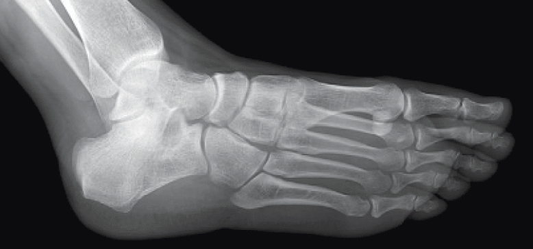
Wilhelm Conrad Röntgen entdeckte 1895 eine neue, unsichtbare Strahlung, die er selbst X-Strahlen nannte. Heute spricht man im deutschsprachigen Raum von Röntgenstrahlung. Sie wird von Stoffen mit großer Elektronendichte, etwa Blei, stark abgeschwächt und eignet sich deshalb für Durchleuchtungen.
Wichtig ist aber auch die Kehrseite: Röntgenstrahlung ionisiert Materie. Deshalb sind bei medizinischen und technischen Anwendungen Strahlenschutz und geringe Dosis entscheidend.
Treffen energiereiche Elektronen auf ein Metall hoher Ordnungszahl, entsteht unsichtbare Strahlung sehr kleiner Wellenlänge: Röntgenstrahlung.
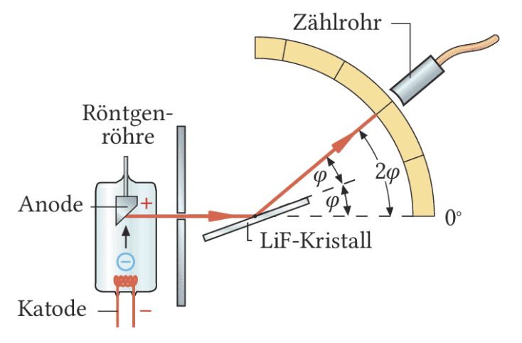
In der Röntgenröhre werden Elektronen von der Kathode zur Anode beschleunigt. Bei einer Beschleunigungsspannung $U$ besitzt jedes Elektron die Energie E4_{\text{el}} = eU.4
Gibt ein Elektron seine gesamte Energie in einem Vorgang an ein Photon ab, dann entsteht das energiereichste mögliche Röntgenquant. Genau daraus folgt:
$E_{\text{ph,max}} = hf_{\text{max}} = eU$
Damit sind auch die Grenzgrößen festgelegt:
$f_{\text{max}} = \frac{eU}{h}$, $\lambda_{\text{min}} = \frac{ch}{eU}$
Die Beschleunigungsspannung legt die maximale Quantenenergie der Röntgenstrahlung fest. Je größer $U$, desto kleiner wird $\lambda_{\text{min}}$ und desto größer wird $f_{\text{max}}$.
Bei $U = 30\,\text{kV}$ hat jedes Elektron $30\,\text{keV}$ Energie.
Dann gilt $f_{\text{max}} \approx 7{,}3 \cdot 10^{18}\,\text{Hz}$.
Es ergibt sich $\lambda_{\text{min}} \approx 42\,\text{pm}$.
Dafür schauen wir uns die Struktur eines Kristalls ganz genau an. Ein Kristall besteht aus einer regelmäßigen, räumlich periodischen Anordnung von Atomen. Die verschiebenen Atome bilden Scharen paralleler Netzebenen mit Abstand $d$:
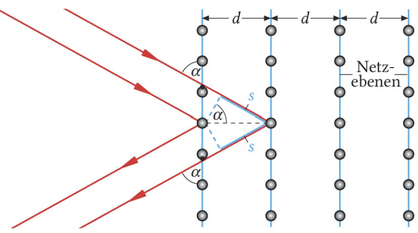
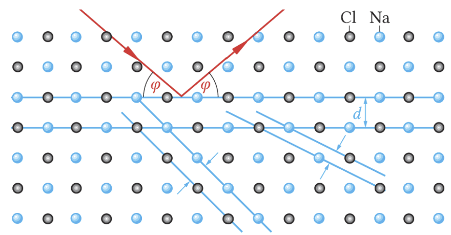
Röntgenstrahlung hat Wellenlängen deutlich unter \(1\,\text{nm}\). Gewöhnliche optische Gitter sind dafür viel zu grob. Kristalle besitzen aber Netzebenenabstände in genau dieser Größenordnung. Deshalb können Kristalle als Beugungsobjekte für Röntgenstrahlung dienen.
Starke Reflexion tritt nur dann auf, wenn die Bragg-Bedingung erfüllt ist:
\(k \cdot \lambda = 2d \cdot \sin \varphi\), \(k = 1,2,3,\dots\)
Der Winkel \(\varphi\) wird gegen die Netzebene gemessen. Er heißt auch Glanzwinkel, weil bei genau diesem Winkel konstruktive Interferenz auftritt.
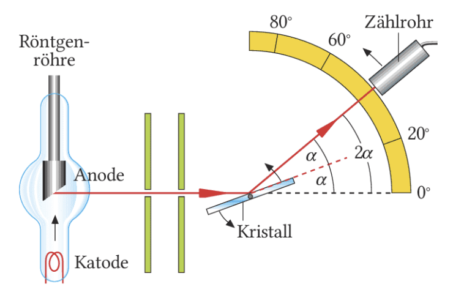
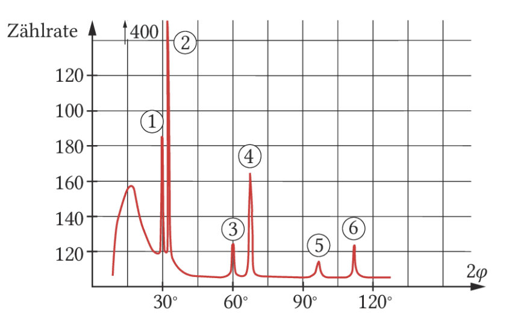
Das Röntgenspektrum besitzt einen kontinuierlichen Untergrund. Er entsteht, weil Elektronen ihre Energie oft in mehreren Schritten verlieren. Dann entstehen Photonen unterschiedlicher Wellenlängen.
Dazu kommen charakteristische Linien. Sie hängen vom Anodenmaterial ab und verraten atomare Übergänge im Material selbst.
Wichtig ist die Trennung: Die Grenzwellenlänge hängt bei gegebener Spannung von \(U\) ab, die Lage charakteristischer Linien vom Material.
Die hohen Linien ① und ② werden bei kleinen Winkeln gemessen. Wir deuten sie als Beugungsmaxima 1. Ordnung für zwei verschiedene Wellenlängen. Aus dem Netzebenenabstand \(d = 282\,\text{pm}\) für NaCl und den Winkeln \(\varphi_1 = 15^\circ\) und \(\varphi_2 = 16^\circ\) berechnet man mit der Bragg-Gleichung die Wellenlängen \(\lambda_1 = 0{,}14\,\text{nm}\) und \(\lambda_2 = 0{,}15\,\text{nm}\) für die Röntgenstrahlung. Bei den Linien ③, ④, ⑤ und ⑥ handelt es sich um Maxima zweiter und dritter Ordnung der gleichen Wellenlängen, entsprechend den Wegunterschieden \(2s = 2d \cdot \sin\varphi = 2\lambda\) und \(3\lambda\).
Wie bei dem Versuch oben werden in einer Röntgenröhre Elektronen mit der Spannung \(U = 30\,\text{kV}\) beschleunigt. Jedes Elektron erhält die Energie \(E_{\text{el}} = eU = 30\,\text{keV}\), die es an der Anode abgibt. Wenn sich dort diese Energie vollständig in ein Röntgenquant umsetzt, wird der Photoeffekt umgekehrt. Dann gilt für die energiereichsten Quanten \(E_{\text{ph,max}} = hf = eU\).
Das Experiment zeigt, dass die Röntgenstrahlen erst bei einem kleinsten Winkel $\varphi_{\text{min}}$ und auch erst ab einer minimalen Wellenlänge $\lambda_{\text{min}}$ auftreten:
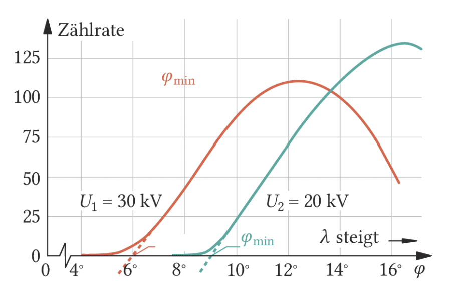
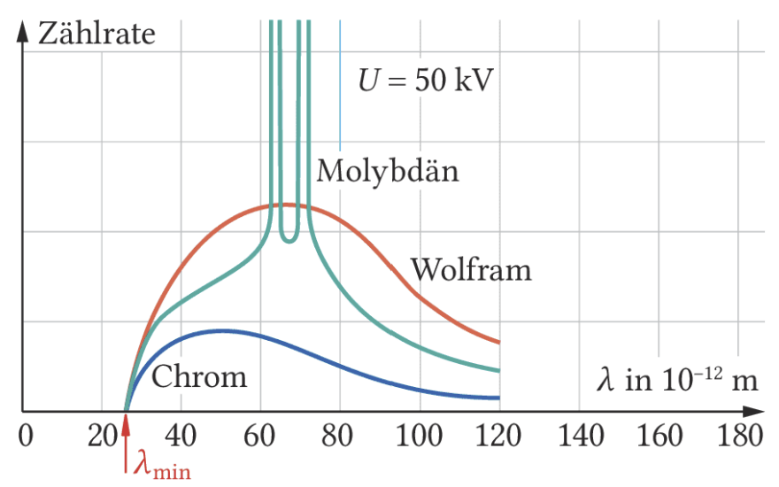
Dies kann man folgendermaßen erklären:
Da für die energiereichsten Quanten \(E_{\text{ph,max}} = hf = eU\) gilt, sollten Röntgenstrahlen mit der maximalen Frequenz \(f_{\text{max}} = \frac{eU}{h} \approx 7{,}3 \cdot 10^{18}\,\text{Hz}\) entstehen.
Das bedeutet, es existiert eine minimale Wellenlänge \(\lambda_{\text{min}} = \frac{c}{f_{\text{max}}} = \frac{ch}{eU} \approx 42\,\text{pm}\).
Für den LiF-Kristall mit \(d = 201\,\text{pm} = 201 \cdot 10^{-12}\,\text{m}\) und den gemessenen Grenzwinkel \(\varphi_{\text{min}} = 6^\circ\) folgt in 1. Ordnung \(k = 1\) mit der Bragg-Gleichung:
\(\lambda_{\text{min}} = 2d \sin \varphi_{\text{min}} = 2 \cdot 201\,\text{pm} \cdot \sin 6^\circ \approx 42\,\text{pm}\)
Das passt genau zu der über \(E_{\text{ph,max}} = eU\) vorhergesagten Grenzwellenlänge.
Die energiereichsten Röntgenquanten entstehen dann, wenn ein Elektron seine gesamte Beschleunigungsenergie in genau einem Vorgang an ein Photon abgibt. Deshalb gilt für die Grenzwerte der Röntgenstrahlung: \(E_{\text{ph,max}} = hf_{\text{max}} = eU\) und damit \(\lambda_{\text{min}} = \frac{ch}{eU}\).
Nach Photoeffekt und Röntgenstrahlung war klar: Licht hat nicht nur Wellencharakter. Louis de Broglie drehte den Gedanken um und fragte, ob dann nicht auch Elektronen Welleneigenschaften besitzen müssen.
Louis-Victor de Broglie schlug 1924 vor, klassische Teilchen wie Elektronen nicht nur als kleine Kugeln zu betrachten. Wenn Licht sowohl Wellen- als auch Teilcheneigenschaften zeigt, dann sollte man aus Symmetriegründen auch bei Elektronen Welleneigenschaften in Betracht ziehen.
Er ordnete Teilchen mit Impuls \(p\) formal eine Wellenlänge zu:
\(\lambda_B = \frac{h}{p}\)
Diese Gleichung heißt De-Broglie-Gleichung. Die zugehörige Welle nennt man De-Broglie-Welle, Materiewelle oder \(\Psi\)-Welle.
\(\lambda_B = \frac{h}{p}\)
Je größer der Impuls eines Teilchens, desto kleiner ist seine Materiewellenlänge.
\(p = m \cdot v\)
Für langsame Elektronen genügt in der Schulphysik meist diese klassische Näherung.
\(E_{\Psi} = h \cdot f\)
Auch der Materiewelle wird analog zum Photon eine Frequenz \(f\) zugeordnet.
Nicht nur Licht, sondern auch Elektronen sollen Wellen- und Teilcheneigenschaften besitzen.
Jedem Teilchen mit Impuls \(p\) wird über \(\lambda_B = \frac{h}{p}\) eine Wellenlänge zugeordnet.
Dann müssten auch bei Elektronen Beugung und Interferenz auftreten, wenn ihre Wellenlänge zur Struktur des Versuchs passt.
Das hast du eigentlich schon gesehen: Beim Doppelspalt hast du gelernt, dass auch Materie Welleneigenschaften haben kann. Wenn du Elektronen auf einen Doppelspalt schießt, entsteht ebenfalls ein Interferenzmuster. Genau das passt zur Idee der De-Broglie-Wellen. Wenn du willst, gehe noch einmal zurück zu wellen-book-Interferenz2.html.
Einstein fand 1905 die Beziehung \(E = mc^2\). Ordnet man einer Energie formal eine Masse zu, dann kann man auch Photonen mit ihrer Energie \(E_{\text{ph}} = hf\) einen Massewert zuweisen:
\(m = \frac{E_{\text{ph}}}{c^2} = \frac{hf}{c^2}\)
Photonen besitzen zwar keine Ruhemasse, aber dieser Ausdruck zeigt, dass energiereichere Photonen stärker mit gravitativen Feldern in Wechselwirkung treten können. Genau deshalb kann Licht an sehr massereichen Objekten abgelenkt werden, etwa bei Gravitationslinsen.
Aus dem Trägheitsgedanken folgt außerdem ein Impuls des Photons. Mit \(v = c\) erhält man:
\(p = m \cdot c = \frac{hf}{c} = \frac{h}{\lambda}\)
Auch das ist physikalisch beobachtbar: Der Impuls des Sonnenlichts trägt dazu bei, dass Kometenschweife von der Sonne weg zeigen.
Photonen wird ein zur Frequenz \(f\) proportionaler Massewert und ein Impuls zugeschrieben:
\(m = \frac{hf}{c^2}\), \(\quad p = \frac{h}{\lambda}\)
Für Elektronen folgt analog die De-Broglie-Wellenlänge \(\lambda_B = \frac{h}{p}\). Beugung und Interferenz sind deshalb nicht nur Lichtphänomene.
Auf der letzten Seite hast du schon gesehen, dass Photonen Impuls besitzen. Genau daran knüpft der Compton-Effekt an: Ein Photon kann mit einem Elektron stoßen und dabei Energie und Impuls übertragen.
Der Kometenschweif auf der Seite davor war schon ein Hinweis: Licht trägt Impuls. Beim Compton-Effekt wird dieser Impuls nicht nur astronomisch sichtbar, sondern direkt im Labor. Du beobachtest dabei, dass ein Photon ein Elektron anstoßen und selbst seine Richtung und Wellenlänge ändern kann.
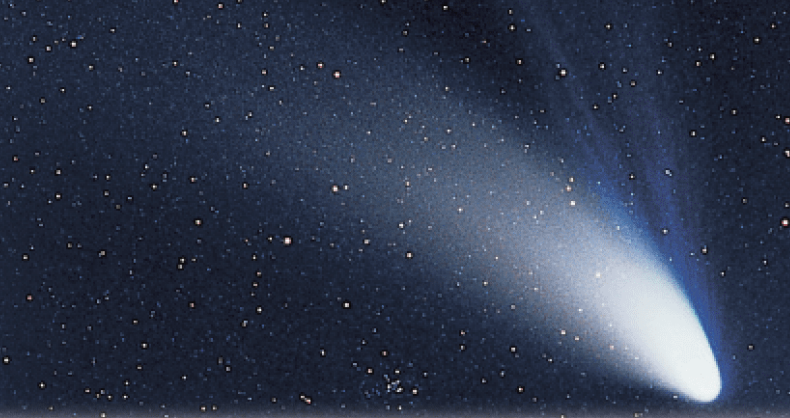
Arthur Holly Compton untersuchte 1922 die Streuung von Röntgenquanten an Elektronen, die in Graphit nahezu frei sind. Das einfallende Quant \(Q\) besitzt den Impuls \(\vec p\). Nach dem Stoß fliegt ein Elektron mit dem Impuls \(\vec p'_e\) weg, und ein gestreutes Quant \(Q'\) verlässt die Stoßstelle mit dem Impuls \(\vec p'\).
Für den Stoß gilt der Impulserhaltungssatz:
\(\vec p = \vec p'_e + \vec p'\)
Photonen verhalten sich also nicht nur wie Energieträger, sondern können echte Stoßprozesse ausführen.
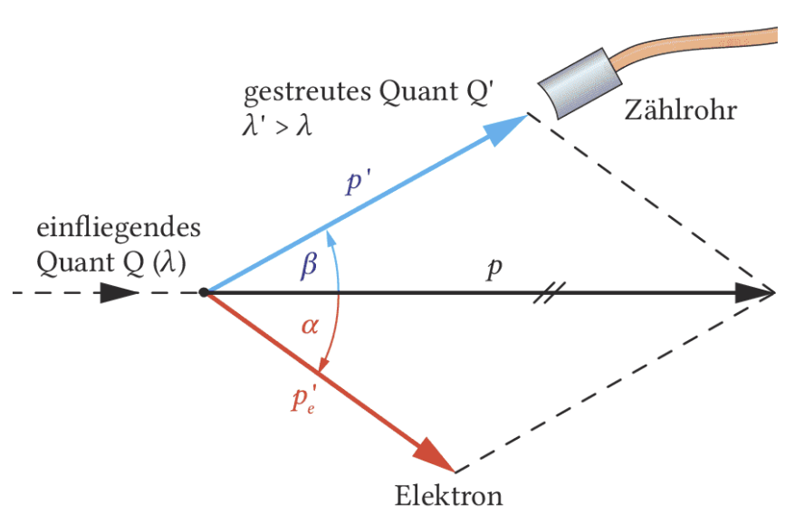
Auch der Energieerhaltungssatz bleibt erfüllt. Das Elektron erhält beim Stoß einen Teil der Energie des Photons. Deshalb hat das gestreute Quant \(Q'\) eine kleinere Energie als vorher. Kleinere Energie bedeutet kleinere Frequenz und damit eine größere Wellenlänge.
Die Wellenlängenzunahme lässt sich relativistisch berechnen:
\(\Delta \lambda = \lambda' - \lambda = \lambda_C \cdot (1 - \cos \beta)\)
Hier ist \(\lambda_C = \frac{h}{m_e c} = 2{,}4\,\text{pm}\) die Compton-Wellenlänge. Du siehst: \(\Delta \lambda\) hängt nicht von der ursprünglichen Wellenlänge ab, sondern nur vom Streuwinkel \(\beta\).
Stößt ein Photon auf ein Elektron, ändert sich seine Wellenlänge um \(\Delta \lambda = \lambda_C \cdot (1 - \cos \beta)\) mit \(\lambda_C = \frac{h}{m_e c} = 2{,}4\,\text{pm}\).
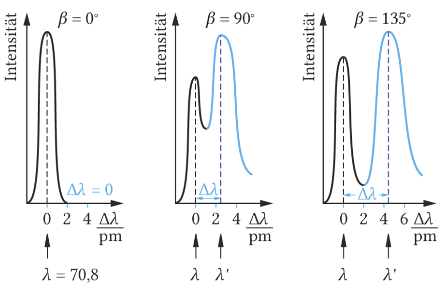
Das war damals eine Sensation. Bei sichtbarem Licht fällt diese Änderung praktisch nicht auf, weil \(\Delta \lambda \approx 2\,\text{pm}\) im Vergleich zu sichtbaren Wellenlängen winzig ist. Bei Röntgen- und \(\gamma\)-Strahlung ist dieser Effekt dagegen deutlich messbar.
Genau das überzeugte viele Physiker endgültig von der Existenz der Photonen. Der Compton-Effekt erinnert an Billardkugeln, aber zugleich spielt die Wellenlänge eine zentrale Rolle. Photonen sind also weder bloß klassische Teilchen noch bloß klassische Wellen.
Spätestens beim Doppelspalt, bei de Broglie und beim Compton-Effekt wird klar: In der Quantenphysik reicht das klassische Teilchenbild nicht mehr. Jetzt kommt die Frage dazu, was Messwerte wie Ort und Impuls überhaupt bedeuten.
In der Quantenphysik beschreibt die Wellenfunktion \(\Psi\) den Zustand eines Quantenobjekts. Du solltest sie nicht als direkt sichtbare Welle verstehen, sondern als mathematische Beschreibung, aus der du Wahrscheinlichkeiten berechnen kannst.
Nach der Bornschen Wahrscheinlichkeitsinterpretation hat nicht \(\Psi\) selbst eine direkte messbare Bedeutung, sondern ihr Betragsquadrat:
\(|\Psi(x,t)|^2\)
Das gibt an, mit welcher Wahrscheinlichkeit du das Teilchen an einem Ort findest. Wo \(|\Psi|^2\) groß ist, ist ein Nachweis wahrscheinlicher. Wo \(|\Psi|^2\) klein ist, tritt ein Nachweis seltener auf.
Wenn du viele Elektronen misst, kannst du die Messwerte durch ein Histogramm darstellen und zum Beispiel einen Mittelwert und eine Standardabweichung bestimmen. Das gilt für Ortsmessungen genauso wie für Impulsmessungen.
Der entscheidende Unterschied zur klassischen Physik ist aber: Hinter diesen Streuungen steckt nicht nur Unkenntnis über einen eigentlich exakten wahren Ort und einen exakten wahren Impuls. In der Quantenphysik sind Ort und Impuls nicht gleichzeitig beliebig scharf bestimmbar. Sie sind bis auf die Naturkonstante $h$ unbestimmt.
Das bedeutet, je genauer man den Ort bestimmt, desto unschärfer wird der Impuls und umgekehrt.
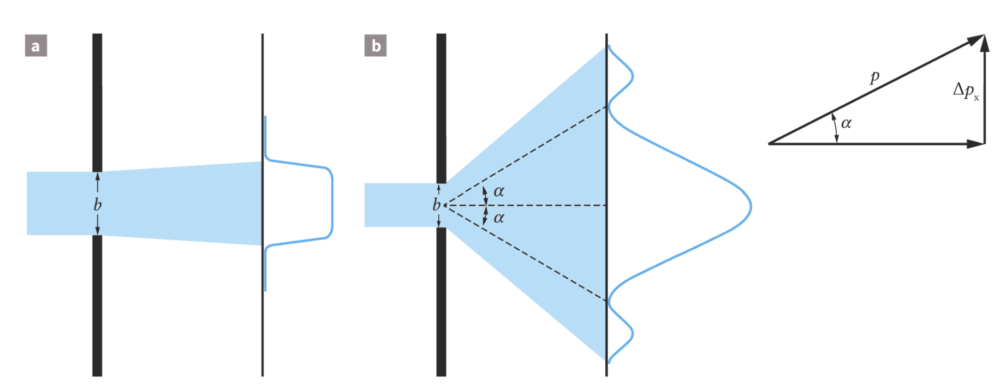
Ein Elektronenstrahl, der auf einen engen Spalt fällt, wird hinter dem Spalt gebeugt. Die Elektronen fliegen also nicht alle exakt geradeaus weiter, sondern verteilen sich über einen Winkelbereich. Damit entsteht eine Verteilung der Querimpulse.
Den Einzelspalt selbst kennst du schon aus der Wellenoptik. Wenn du die Idee noch einmal wiederholen willst und vor allem die Simulation nochmal durchführen willst, schau in wellen-book-Interferenz2.html.
Je kleiner die Spaltbreite \(\Delta x\), desto stärker ist die Aufweitung hinter dem Spalt und desto größer wird die Streuung \(\Delta p_x\) der Querimpulse. Das kannst du auch in der Simulation gut sehen. Mit der De-Broglie-Wellenlänge folgt daraus als Grundaussage:
\(\Delta x \cdot \Delta p_x \gtrsim h\)
Dafür brauchst du ein bisschen Mathe und Statistik. Du betrachtest nicht ein einzelnes Elektron, sondern sehr viele Messwerte. Die Streuung der Querimpulse beschreibst du mit der Standardabweichung \(\Delta p_x\). Die Ortsstreuung \(\Delta x\) kannst du hier näherungsweise mit der Spaltbreite verbinden.
Aus dem Bild kannst du für kleine Winkel zuerst ablesen:
\(\sin(\alpha) \approx \frac{\Delta p_x}{p}\)
Dabei ist \(p\) der Impuls in Strahlrichtung. Gleichzeitig kennst du vom Einzelspalt die Abschätzung über das erste Beugungsminimum:
\(\sin(\alpha) \approx \frac{\lambda}{\Delta x}\)
Jetzt setzt du für Elektronen die De-Broglie-Wellenlänge \(\lambda = \frac{h}{p}\) ein. Dann folgt:
\(\sin(\alpha) \approx \frac{h}{p \cdot \Delta x}\)
Weil beide Gleichungen denselben Winkel \(\alpha\) beschreiben, kannst du sie gleichsetzen:
\(\frac{\Delta p_x}{p} \approx \frac{h}{p \cdot \Delta x}\)
Nach dem Kürzen von \(p\) bleibt:
\(\Delta x \cdot \Delta p_x \approx h\)
In vielen Darstellungen findest du auch Formen mit \(h/2\pi\) oder \(\hbar\). Für dich ist hier der zentrale Gedanke: Wenn du den Ort durch einen engen Spalt stärker festlegst, wird die Verteilung der Querimpulse zwangsläufig breiter.
Heisenbergsche Unbestimmtheitsrelation:
\(\Delta x \cdot \Delta p_x \ge h\)
Es ist prinzipiell nicht möglich, Quantenobjekte in einen Zustand zu bringen, in dem Ort und Impuls gleichzeitig kleinere Streuungen aufweisen als durch diese Relation erlaubt ist.
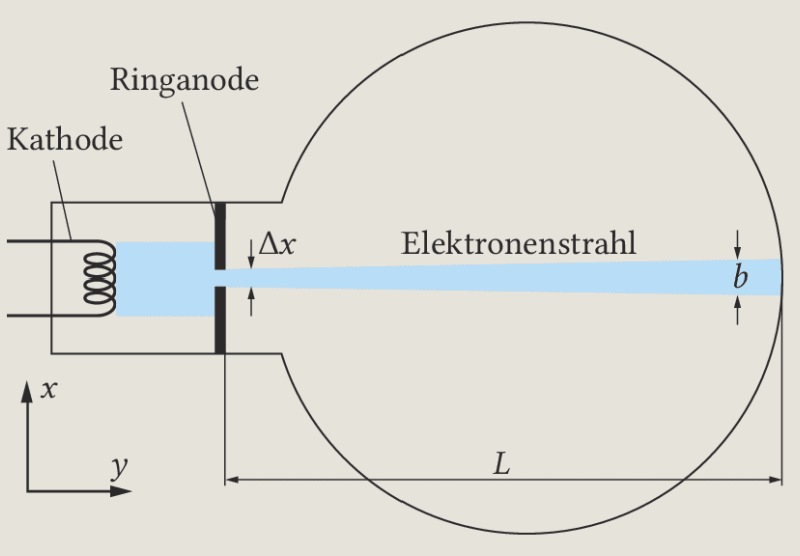
In einer Elektronenstrahlröhre wirkt es so, als ob die Elektronen auf einer gut bestimmbaren Bahn laufen. Das widerspricht der Unbestimmtheitsrelation aber nicht. Wenn der Strahl an der Anode zum Beispiel auf \(\Delta x \approx 0{,}1\,\text{mm}\) abgeblendet wird, ist die minimale Querimpulsstreuung zwar vorhanden, aber immer noch winzig.
Bei einer Beschleunigungsspannung von \(1\,\text{kV}\) ist die Geschwindigkeit in Strahlrichtung so groß, dass sich der Strahl auf \(20\,\text{cm}\) Flugstrecke quer nur um einen extrem kleinen Betrag aufweitet. Diese Aufweitung liegt weit unter der praktischen Nachweisbarkeit. Darum erscheint dir die Bahn scharf, obwohl sie es im quantenphysikalischen Sinn nicht exakt ist.
Du hast jetzt mehrere Bausteine der Quantenphysik zusammengeführt: Röntgenphotonen entstehen beim Abbremsen schneller Elektronen, Kristalle machen ihre Wellenlängen sichtbar, Elektronen selbst zeigen einen Wellencharakter, Photonen können Stöße ausführen und Ort und Impuls bleiben prinzipiell unbestimmt.
Auf dieser Seite sollst du nicht nur eine Formel wiederholen, sondern die Kapitel zusammenbinden. Gute Antworten zeigen deshalb, wie Energiequanten, Wellencharakter und statistische Aussagen zusammengehören.